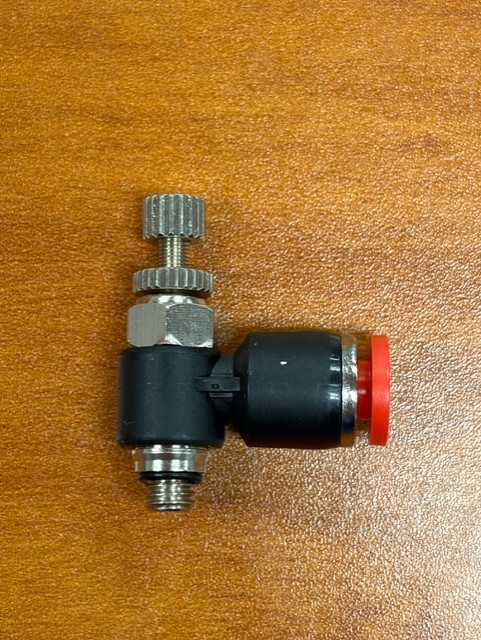

Last lesson your cylinder moved. Today you make it extend slowly but retract quickly.
A cylinder that slams out can knock a part over or crack it. Machines often need a gentle push on the way out and a quick return, so they are ready for the next part sooner.
Your challenge: make your VEX cylinder extend slowly but retract quickly. First you will try it with no extra parts. Then you will add a new part and try again.
Your VEX cylinder extends and retracts in about half a second. Without adding any parts, how could you make it extend more slowly? Predict what your idea would also do to retraction and to how hard the cylinder pushes.
Test the most common idea: turn the regulator down. Time each stroke by counting or with a phone video.
Glasses on, rod pointed away. Turning the regulator is safe with the air on; changing a tube is not.
At 50 psi, time one extension and one retraction. With the rod fully extended, press gently on its tip to feel the push. Never try to stop a moving rod.
Turn the regulator to 25 psi and repeat both strokes and the push.
Record both rows in your notebook: pressure, extend time, retract time and how the push felt.
Lower pressure did slow the cylinder, but it slowed both directions, and the push got weaker. Force = pressure × area, so halving the pressure halves the push.
About 6.1 lb of push on the 10 mm VEX bore (0.122 in²).
About 3.1 lb: slower both ways, and half the push.
To change speed without losing force, control how fast the air flows, not how hard it pushes. The regulator sets force; the flow sets speed.
The kit’s air flow valve fittings screw into the cylinder’s ports. Each one is a one-way flow control valve.
Air flowing into the cylinder pushes open a small check valve and passes freely. Air flowing out has to squeeze through a narrow gap.
A small screw sets the gap: turn it in to narrow it, out to open it. VEX says the fittings go on the cylinder ports only, not on the solenoid.

The knurled knob turns the screw that sets the gap. The threaded end screws into the cylinder port, and the tube pushes into the red collar.
The symbol: an adjustable restriction (the arrow) beside a check valve (the ball and seat), drawn in one dashed box.
A VEX flow fitting lets air flow freely into the cylinder through it, but squeezes air flowing out through it. You want the cylinder to extend slowly and retract fast. Which port should the fitting go on?
The flow simulator has the same circuit as your bench, with a flow fitting you can add to either cylinder port. It is a simplified model: it shows the trend, not your cylinder’s exact times.
| # | Pressure | Cap end | Rod end | Extend | Retract |
|---|
The piston can only move as fast as the air in front of it gets out. Squeezing the air leaving the rod end slows extension; on the way back, the rod end fills freely and retraction stays fast.
Controlling the air on its way out is called metering out. Air stays packed on both sides of the piston, so the motion is smooth and steady, even if a load pulls on the rod.
Glasses on. Then close the shut-off valve before you touch a fitting; it vents the cylinder.
Screw one flow fitting into the rod-end port by hand, and move the A tube to it. Push the tube in until it stops.
Turn the screw in all the way, then back it out 1 turn.
Point the rod away from people. Open the shut-off valve, then time both strokes.
Adjust the screw a half turn at a time, closing the shut-off valve whenever you touch the fitting.
Record every setting and both times. Compare them with the simulator.
Someone set flow fittings on this cylinder and covered them up. Work out which ports have a fitting and about how far each knob is open, using only how the cylinder moves.
Time both strokes. Which one is slow? That tells you which end is squeezing its air out.
Compare each time with the trials you recorded in the flow simulator to estimate the knob setting.
Does changing the pressure tell you which port has the fitting? Test it before you rely on it.
Submit your answer. Within half a turn counts. Then try a new mystery.
| # | Pressure | Extend | Retract |
|---|
Close the shut-off valve, then stop the program. Leave the flow fitting in place: next lesson your slow-out, fast-back circuit powers a mechanism.
The tank is still charged. Empty it with your teacher before the kit is stored.
1. A team turns its regulator down from 50 psi to 25 psi. What happens to its VEX cylinder?
2. Explain why a flow fitting on the rod-end port slows extension but not retraction.